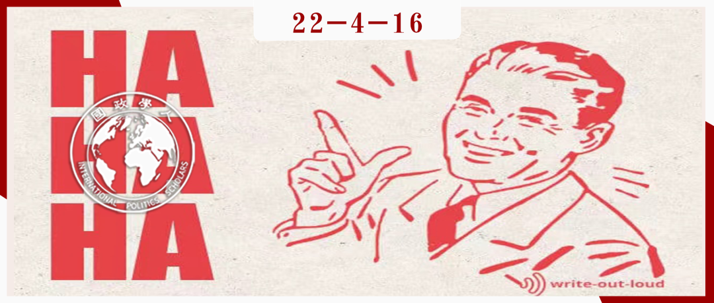

收录于合集

战略幽默：外交中的搞笑因素
作者： Dmitry Chernobrov，谢菲尔德大学高级讲师，研究领域为幽默与公共外交、国际冲突与公众舆论、数字技术与人道主义援助等。
编译： 胡富钦（国政学人编译员，南开大学周恩来政府管理学院国际关系系）
来源： Chernobrov D. Strategic humour: Public diplomacy and comic framing of foreign policy issues. The British Journal of Politics and International Relations. 2022;24(2):277-296. doi:10.1177/13691481211023958

导读
本文是公共外交领域的跨学科研究，涉及数字外交、政治传播等背景知识。近年来，各国愈发重视自身国际声誉和话语权等软实力因素，公共外交与数字技术的深度结合加强了上述趋势。本文作者着眼于幽默在影响一国软实力中的重要作用，提出 “战略幽默”的概念， 阐释 幽默在数字媒体生态下对公共外交的巨大作用， 更 揭示了战略幽默与后真相政治之间的联系。 作者对俄罗斯运用战略幽默的三个案例进行分析，揭示了战略幽默应用形式的多样化。
译者认为本文至少有以下亮点：在 理论层面 ，对数字公共外交和传播领域的“幽默”现象进行概念化和理论化，并进一步揭示了后真相政治的运作特点，有一定分析深度。在 方法层面 ，作者在选取案例时遵循了最小相似法，以通过谨慎而巧妙的案例选取为“战略幽默”的特征带来更全面的解释。本文对译者的最大启示在于其充分利用多学科知识对现实问题进行分析，由此凸显出 跨专业学习和研究 的重要性。
摘要
本文探讨了幽默在公共外交中的应用。作者就此提出了一个新概念——“战略幽默”，即国家和代理人运用幽默的形式向国内外公众推送关于争议事件的工具性解释。各国运用战略幽默对相关事件进行建构，以扩大自身利益、转移外部批评和挑战他者叙事。战略幽默以生动有趣的形式传达严肃信息，它简单易懂、令人印象深刻，适合新媒体生态，吸引媒体和公众的眼球。俄罗斯最近卷入了一系列重大争议，本文选取与之相关的三个案例，并分析战略幽默在其中的运用。作者认为，战略幽默是公共外交中一种新兴的工具，它形式多样，由社交媒体和后真相政治的兴起推动，并对国家权力资源的依赖程度较低。
编译
01
引言
RT发布突发新闻：“普京感谢特朗普分享恐怖分子信息”。
_
_
普京给特朗普打电话：“总统先生，谢谢你和我共享情报！”
特朗普驳斥道：“但我根本没这么做！”
普京回答说：“但你的国民现在全都那样觉得了！”
——俄罗斯广为流传的一个笑话
一直以来，幽默主要作为一种娱乐方式而存在。其实，作为国际政治的一种叙事，幽默在传播重大国际事件方面的作用突出，并影响着各类行为体的国际声誉。在当下的媒体生态中， 幽默具有明显优势，它的叙事（narrative）简单易懂、令人印象深刻，兼具新闻价值和吸引力，且容易被广泛传播。
政治幽默历来都被看作特定社会权力结构和媒体环境的产物，既有研究涵盖了幽默在不同政治体制中的特点和作用、在网络环境中的社会动员效应等。然而，鲜有研究关注 幽默在外交政策传播中的作用，尤其是其在外交活动中的多方面应用、对争议议题的建构和对战略叙事的推广。
为此，本文提出了 “战略幽默”（Strategic Humour） 的概念。作者对其给出以下定义： 国家和代理人以幽默的形式向国内外公众推送关于争议事件的工具性解释。 其中的争议事件涉及不同国际行为体的竞争性叙事，他们最大限度地提升己方叙事的吸引力，扩大己方叙事的受众，并削弱对方叙事的影响力。 叙述方式的重要性并不亚于事件本身的真实性， 在对网络环境的适应性方面，便于分享、风趣生动、兼具简洁性和新闻价值的幽默文字往往比冗长的事实陈述和一般声明更具优势。 战略幽默的目的 主要为：（1）扩大受众群体，对争议事件加以建构，以服务于国家利益；（2）挑战对手的竞争性叙事；（3）丑化外国政府和媒体的形象；（4）揭露政客公开声明和私下表态的分歧，放大冲突，丑化形象；（5）对本国受到的外部批评进行转移和反击；（6）对主要政治议程施加影响；（7）提升本国行为在国际体系中的合法性。作者认为， 在后真相时代，战略幽默是数字外交的重要工具， 因为它充分利用了争议事件的不确定性，凭借情绪化的信息传递方式，在追求扩大受众群体和影响力的同时，极力推广其建构的共识和真相。
02
幽默、外交政策框架构建和公众舆论
重大国际事件往往伴随着不同行为体竞争性的叙事（narratives），这些叙事建构了国际事件的意义。框架（frames）在公众对外交政策的了解中起了核心作用，不仅塑造事件的呈现方式，还影响着受众的认知。战略幽默对构建外交政策框架的助益体现在两个方面：（1） 作为一种修辞表述（rhetorical presentation）， 它能够简化事件信息，对广大受众和新闻媒体具有广泛吸引力；（2）作为一种认知结构（cognitive structure），它影响受众的感知，使人印象深刻，过目难忘。
对媒体框架和国际危机的既有研究表明，幽默有助于推广信息。它避繁就简，以轻松娱乐的方式，向受众传递利于己方的观点信息。有学者甚至认为喜剧本身就是“严肃的政治”，它作用巨大，能够影响政治结构的合法性。幽默的内涵十分广泛，并非所有幽默信息都有战略性和游说的目的。 本文提出的“战略幽默”概念主要有以下两个特征： （1）国家及其代理人会利用这种幽默，推广对某一事件的工具性解释，以推进国家利益，破坏竞争性叙事，并实现外交政策目标；（2）幽默只是供国家选择的多种叙事方式之一，幽默的叙事方式之所以脱颖而出，是因为其在情绪上能够吸引受众，最大程度地提升受众规模。
政治幽默和政治新闻愈发相得益彰。 特别是对于广大青少年受众，前者逐渐代替后者发挥作用。网民们的幽默互动能够对主流媒体的政治报道起到补充作用。由于其对媒体和受众的强大吸引力，幽默框架也经常出现在政治选举中。 战略幽默充分利用了幽默形式与媒体逻辑的契合性， 为建构国际政治和推广外交政策提供了一种高效益的资源。 政治幽默也可以影响公众舆论， 这种影响在对某个事件真实情况知之甚少的群体中尤其明显。
03
幽默、公共外交和战略叙事
叙事是软实力的基础， 因为只有“围绕共有观念达成共识”，一国才能产生持久的影响。叙事呈现了一个带有特定情节的故事，这个故事解释了政治现实，其中暗含特定的因果关系和目的性，并含有叙事主体的利益，塑造着公众对特定事件的认知和记忆。因此，有学者指出，战略叙事（Strategic narratives）应该被视为一种权力资源，它不但在政治竞争和复杂的媒体生态中至关重要，而且是理解影响力的关键因素。战略叙事的主体通常是国家和外交媒体。
数字外交的兴起引发学界争鸣，有学者表示，各国往往未能将数字公共外交的潜力发挥到最大，它们仍然习惯在社交媒体上进行自言自语式的单向信息发布，而少有和受众之间的双向互动；而 成熟的数字公共外交策略应是契合受众个性和情感的积极信息，经幽默形式包装的信息便是如此。 此外，传统公共外交的受众为外国民众，与之相比，数字公共外交的受众更为广泛——它还能影响国内民众。因此， 战略叙事突破了以往严格的地理界限。
媒体生态正日益数字化，这使得公共外交和战略叙事中的后真相文化不断被强化，即 事实的价值不断下降，情绪化信息和不确定因素的作用增强。外交中的战略幽默顺应了这一趋势， 以情绪化和令人印象深刻的方式挑战主流话语，并在网上广泛传播。后真相叙事往往有所暗示，并对事件提出替代性解释，而与之相似的对比也能够通过运用战略幽默在对手的叙事和己方“建构的真相”之间建立起来。
作为提升影响力的工具，幽默经常被运用在公共外交活动中， 以提升己方叙事的吸引力并削弱对方叙事的影响力。这种情况在以下场合经常出现：当一国招致大量外部批评时、面临敏感议题或争议议题时、需要对外国民众施加影响或动员本国民众时等。另有研究证明，喜剧和嘲讽的形式可以使外交政策合法化，从而在话语层面使相关行为体的行为、利益和身份合理化和正常化。
04
俄罗斯的战略幽默：三个案例研究
为进一步对战略幽默进行分析，本文对俄罗斯进行案例研究。近年来，俄罗斯卷入了一系列国际争议，并利用公共外交资源，在国内和国际层面应对各类指责。相关研究发现，俄罗斯对公共外交愈发重视，综合应用国际广播和社交媒体接触国外民众。它利用一系列广受好评的国内叙事宣传一种特定的世界观，将自己定位为美国霸权的挑战者，以利于自己的方式解释国际事件，并抵抗来自外部的批评。
为考察实施形式和行为体的多样性，作者挑选了俄罗斯在近五年里运用战略幽默的三个案例。案例选择采用了最小相似法（Least-similar approach）,各案例的大多数变量不同（例如战略幽默的运用主体、运用形式和涉及的外交政策问题），但他们运用战略幽默的目的相同，即推广和普及己方关于争议问题的叙事。 在这些案例中，战略幽默的概念可以在日益数字化的公共外交中把各类幽默实践进行理论化。
案例1. 俄外交使团：社交媒体上的扯皮行为
近年来，社交媒体愈发成为外交活动的重要平台。除了日常的信息发布和线上互动，外交使馆还通过挑衅和吸引眼球的简短信息，与他国政府部门、新闻媒体和公众人物等进行扯皮（trolling），以幽默的方式相互指责。有学者指出，扯皮行为是一种风行的政治行为，是后真相政治的驱动力，它可以充分利用精简致命的嘲讽之词，为社交媒体吸引大量粉丝，推广虚假信息并回击相应的批评。 作为战略幽默的一种形式，社交媒体扯皮（Social media trolling）能够吸引新闻媒体报道，吸引更多网民，推广争议事件的利己叙事，嘲弄他国政府，引发国际媒体的批评。
近年来，俄英两国关系呈现出紧张的特点，因此，驻伦敦大使馆一直是频繁使用社交媒体扯皮行为的俄罗斯驻外机构之一。2018年，索尔兹伯里投毒事件让俄英关系极度恶化，英国方面认为俄罗斯参与了这一事件，并驱逐了23名俄罗斯外交官。这一事件引发了媒体的紧密报道，并演变成一场舆论战，俄罗斯的国际形象可能将对随后的总统大选和国际足联世界杯产生重要影响。
在对这一事件的处理中，俄驻伦敦大使馆用幽默的形式对俄罗斯的相关叙事进行推广。例如，在英国驱逐23名大使后，俄驻伦敦大使馆在推特上发帖，内容为一个读数为“-23℃”的温度计，并附上文字“虽然俄英关系已降至-23℃，但我们不惧严寒”，将事态升级归咎于英国方面。该帖子收到了超过3000次转发、2800次点赞（该账号普通推文的转发量为15-80次，点赞量约为150次）。
社交媒体逐渐成为公共外交发重要工具，但幽默在其中的作用还有待探索。作为战略幽默的一种形式，社交媒体扯皮行为可以为公共外交的实践和影响力做出重大贡献。
案例2. 对外广播公司RT：转移外界批评
国际广播是各国用来吸引外国公众和宣传战略叙事的重要公共外交工具。RT是俄罗斯的官方对外广播公司，其使命为“让国际观众了解俄罗斯对重大全球事件的看法”。一些研究认为，RT的定位是反霸权新闻的提供者，它以削弱西方主导的新闻网络和政治议程为己任，是“俄罗斯对BBC和半岛电视台（Al Jazeera）的应对方案”。它的宣传多是通过战略幽默维护俄罗斯的国家利益。
近年来，RT受到不少指控，称它受到俄罗斯政府的控制。于是，在2015年和2017年，RT发起了幽默运动，以转移其受到的相关指控。两次运动分别 以“泄露”的视频和广告活动的形式，抗击西方政府的相关指控，扭转政治议程。
**案例3. 俄罗斯代理人：外交恶作剧
**
2017年2月，美国国会议员Maxine Waters接到了一个恶作剧电话，两名恶作剧者冒充乌克兰总理弗拉基米尔·格罗伊斯曼，指责俄罗斯对乌克兰的各种“行径”，其中包括指责俄罗斯干预一个名为Limpopo的国家的总统选举，并在该国扶植傀儡政府。（Limpopo是俄罗斯儿童读物和动画电影Aybolit中被虚构的国家，现实中并无此国家）在电话中，美国国会议员很惊讶，但对这个电话表示欢迎，并保证“美国将与你们同在”、“将继续对俄进行制裁”，她对俄罗斯的上述“行径”表示担忧，并指出普京的顾问应该对Limpopo选举乱象负责。这通电话的录音被俄罗斯官方媒体广泛报道，并被疯狂传播。于俄罗斯而言，这通电话收效甚佳，“当再次提到 Maxine Waters 的名字时，整个世界都会大笑起来”。
这个恶作剧的政治意义不容小觑。 它以幽默形式传播了一个符合俄罗斯战略叙事的严肃信息——即西方对俄罗斯的制裁是基于扭曲的现实； 这也反映出美国决策者的无知，并呈现出这样一种现象：美国通过一系列地缘政治手段，损害俄罗斯在国际体系中的合理地位，且它的这一行为还会持续下去。这类政治恶作剧是非国家行为体运用战略幽默的典型案例，它们可能影响公众对某些事件和相关政客的感知，突出某些议题的重要性，并对外交活动产生重要影响。正如这个案例所示， 这类恶作剧是战略幽默的一种形式，恶作剧者在其中扮演了国家代理人的角色，向国内外受众介绍关键的外交政策议题，以强化国家战略叙事。
05
结论
本文阐释了战略幽默的概念，即国家及其代理人将幽默作为提升影响力的工具。国家运用战略幽默，通过提升政策合法性、削弱竞争性叙事、转移外部批评、影响政治议程和加强国家战略叙事等方式，向国内外受众建构争议事件和议题。战略幽默应用形式多样化，就俄罗斯而言，运用战略幽默的主体包括了外交使团、对外广播公司RT和代理人。这些行为体用不同的方式为同一个目的服务，即推广俄罗斯的国家叙事。最后，作者指出了战略幽默与后真相政治之间的紧密联系。
参考文献
[1] 潘霁.略论“媒体框架”的概念化[J].国际新闻界, 2010, 32(09):13-17.DOI:10.13495/j.cnki.cjjc.2010.09.005.
[2] Dmitry Chernobrov, No laughing matter? How states use humour in public diplomacy, 13th July 2021, https://www.bidd.org.rs/no-laughing-matter-how- states-use-humour-in-public-diplomacy/
词汇整理
**媒体框架 Media frame
**
**战略叙事 strategic narrative
**
后真相政治 post-truth politics
审校 | 姚博闻 董诗
排版 | 黄紫蓝 杨凌晶
文章观点不代表本平台观点，本平台评译分享的文章均出于专业学习之用, 不以任何盈利为目的，内容主要呈现对原文的介绍，原文内容请通过各高校购买的数据库自行下载。

国政学人
支持学术公益与知识传播
微信扫一扫赞赏作者 __赞赏
已喜欢，对作者说句悄悄话
取消 __
发送给作者
发送
最多40字，当前共字
上一页 1/3 下一页
长按二维码向我转账
支持学术公益与知识传播
受苹果公司新规定影响，微信 iOS 版的赞赏功能被关闭，可通过二维码转账支持公众号。